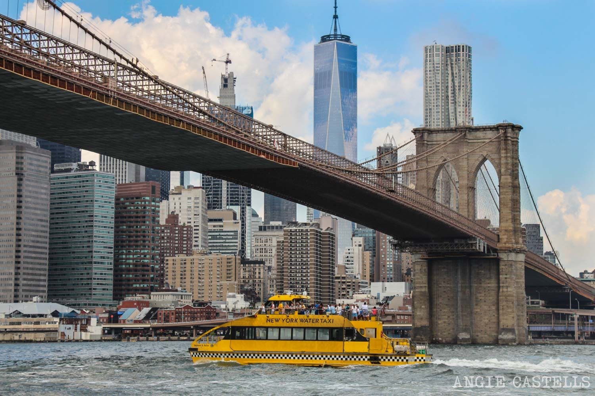

New York
Manhattan - Brooklyn


Nueva York se ha convertido en los últimos años y por méritos propios en la capital económica y cultural más importante del mundo. La ciudad ofrece un ambiente y un estilo de vida único difíciles de explicar en una guía de Nueva York, hay que vivirlo y disfrutarlo.
Asistir a un musical en Broadway, pasar una noche en Times Square, recorrer de un lado a otro el Puente de Brooklyn, disfrutar de una tarde de compras en la Quinta Avenida o sentirte como un broker en Wall Street, son algunas de las cosas que sólo se pueden hacer en Nueva York.
Manhattan es el “borough” más famoso de Nueva York. Se trata del barrio más visitado de la ciudad, todo un icono, y es tan conocido que muchos confunden Nueva York con Manhattan.